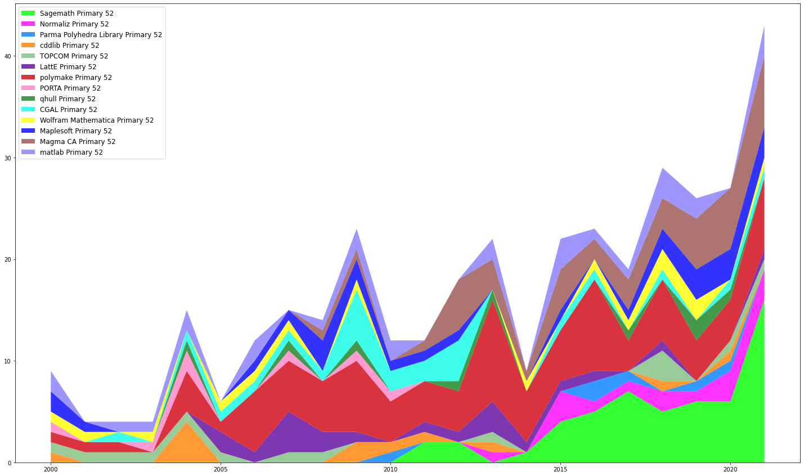
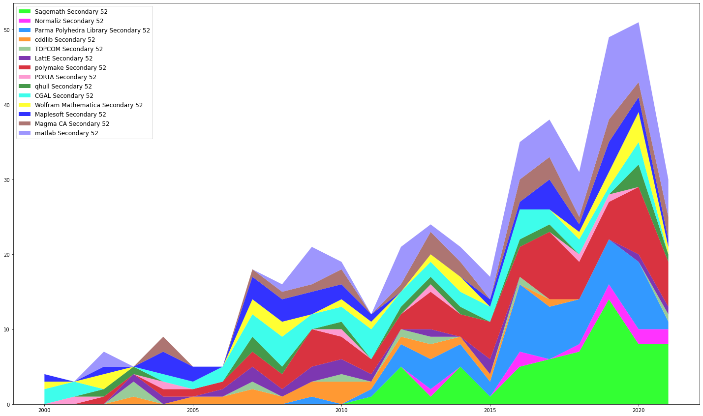
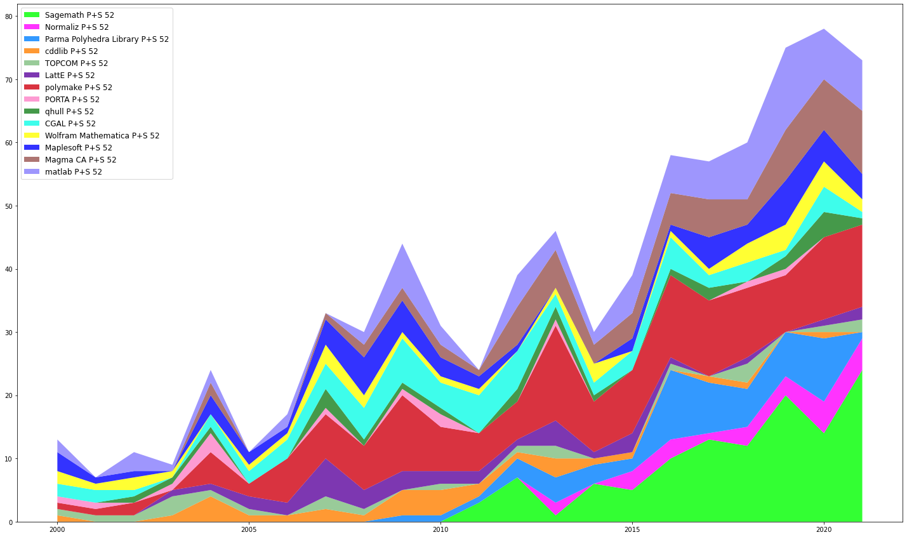
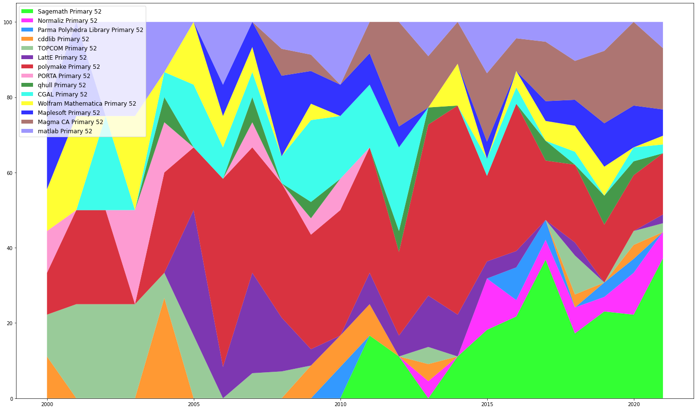
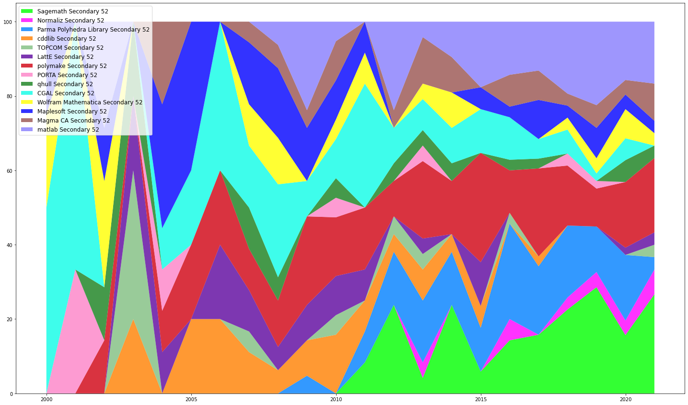
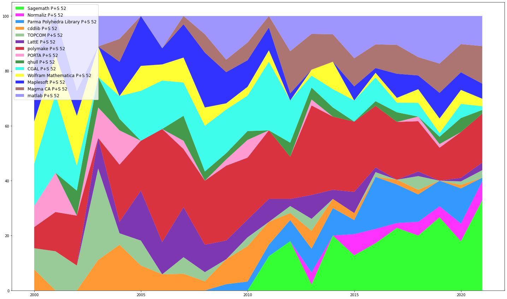

Some time ago, I had the idea to measure the quantity of citations of Sagemath and other computer algebra systems in my area of research work, that is the Mathematics Subject Classification (MSC) 2020: 52-Convex and discrete geometry.
Recent history
At the Sage Days 79, that I organized in November 2016, several Sage developers manifested their interests in pushing forward the capacities of Sagemath in polyhedral geometry, working to improve the interface with other open source projects, while enlarging the community and increase the communication between users and programmers.
This led to the Sage Days 84 in March 2017, an intensive 2-weeks long retreat where a dozen of Sage developers met and set the table for several years of work involved in making the polyhedral library of Sage both user-friendly and research-efficient. This workshop also involved the generous collaboration with developers of PARI/GP and polymake that helped to bring closer the communities.
Two coding sprints then occured during the Year of Coding Sprints at the IMA in 2017/18, where the collaboration with developers of Normaliz and pynormaliz was very fruitful.
Since then, the development of Optimization and Polyhedral Geometry in Sagemath is monitored on the Wiki Page, and the Release Tours describe the new developments in polyhedral geometry as well.
Research Works in Convex and Discrete Geometry refering to CAS softwares
As all developers of open source computer algebra system or specialized packages, it is difficult to measure the impact of the work involved in integrating, deploying, developing and maintaining a software. In the mathematical field, I am under the impression (and likely not alone having this impression) that Academic institutions (whether they are Governmental Funding institutions or Educational) and their members are slow in increasing the recognition of work in the implementation of theoretical methods to provide evidence whether certain assertions be valid or not. Perhaps this lies in the fact that softwares are often shortlived? It is hard to measure the impact in this case when a piece of software was written to obtain the results in a few papers...
Launched in 2005, Sage is now close to attain its age of majority (well, at least here in Québec). One may now answer confidently to those that doubted its viability involved in its mission statement: Creating a viable free open source alternative to Magma, Maple, Mathematica and Matlab. It surely is living its life and is now running on Windows, OSX and Linux.
But is it an alternative to Magma, Maple, Mathematica and Matlab?
I am particularly interested to the answer in the case of research in Convex and Discrete Geometry. So, I have harvested the data. from MathSciNet. I looked at the citations to known CAS softwares with 52 as 1) its primary classification 2) a secondary classification and 3) either of the two.
The softwares/packages that I used to compile the data are: sage, normaliz, ppl, cdd, topcom, latte, polymake, porta, qhull, cgal, mathematica, maple, magma, and matlab.
The first graphic shows the citations to CAS with a Primary classification in 52:
The second graphic shows the citations to CAS with a Secondary classification in 52:
The third graphic shows the total citations to CAS with a classification in 52:
In the 20 first years of the century, we may observe that the citations to CAS in 52 increased five-fold, from around a dozen to more than 60.
Below is the same data, now in relative terms:
The second graphic shows the citations to CAS with a Secondary classification in 52:
The third graphic shows the total citations to CAS with a classification in 52:
One may then observe that the bottom 7 softwares (which are either standard or optional packages in Sage) available account for 64% of the total number of citations, and citations to Sage form half of them, making Sage cited one out of three times when a CAS is cited in the 52-class.
Conclusion
At the beginning of the century, one could say that Magma, Maple, Mathematica, and matlab took about 50% of the share of citations. Currently, the four together are cited in around 32% of the cases and Sagemath winds up being cited also around 32%, and other Open Source discrete geometry projects collect the rest of the acknowledgements.
My intention in producing these graphics are to measure the growing impact of Open Source CAS in research in convex and discrete geometry. Further, to foster collaboration and also knowledge about softwares (perhaps I missed a software, let me know!). Sieving through articles, I discovered certain tools that could be used in certain cases and it is definitely useful to have them reported somewhere...
This post is also to acknowledge the huge amount of work that was put in the Open Source Projects listed above by their developers community. All the scientific work reported above could not have been possible without your contributions and we definitely should not forget to support each other through our projects.
Comments